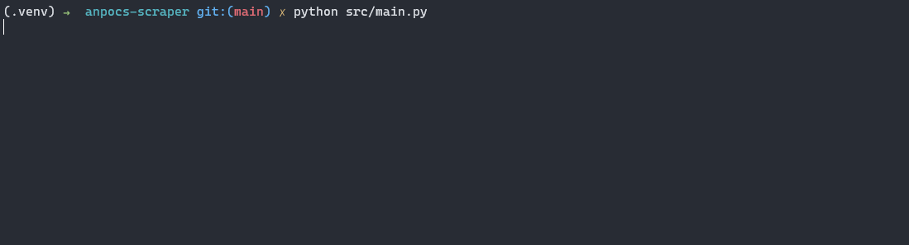
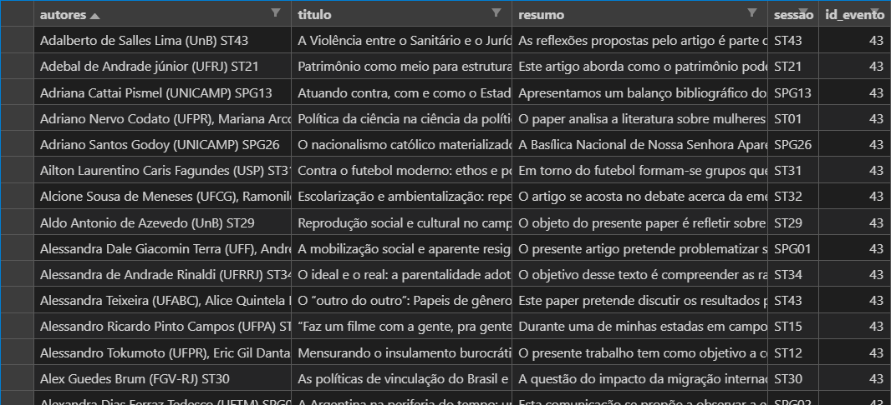

5 ANPOCS
5.1 O que é a ANPOCS?
A Associação Nacional de Pós-Graduação e Pesquisa em Ciências Sociais (ANPOCS) é uma entidade de direito privado sem fins lucrativos que reúne centenas de centros de pós-graduação e de pesquisa em antropologia, ciência política, relações internacionais e sociologia de todo o Brasil. Ela é formada, portanto, por instituições, em vez de pesquisadores individuais.
A associação organiza os Encontros Anuais da ANPOCS, que consistem em congressos cujo número médio de participantes é de 1500 pesquisadores. Esses encontros estão entre os fóruns mais relevantes para as ciências sociais no Brasil.
Diante disso, desenvolvemos o anpocs-scraper – disponível aqui –, um raspador que permite coletar de forma automatizada os dados dos resumos dos trabalhos apresentados nos encontros de 2019, 2020 e, futuramente, 2021. O raspador expressa mais uma iniciativa que busca contribuir para uma ciência aberta e transparente, facilitando o acesso aos dados dos congressos e contribuindo para a preservação da memória das ciências sociais brasileiras.
5.2 Script de raspagem
5.2.1 anpocs-scraper

O anpocs-scraper é um raspador dos dados dos Encontros Anuais da ANPOCS escrito em Python. Atualmente o código permite coletar:
os dados de todos os resumos dos trabalhos apresentados em GT’s e SPG’s do 44º Encontro Anual da ANPOCS
os dados de todos os resumos dos trabalhos apresentados em ST’s e SPG’s do 43º Encontro Anual da ANPOCS
5.2.2 Instalação e modo de uso
Para instalar o raspador basta clonar o repositório, que se encontra aqui, e instalar suas dependências:
git clone https://github.com/vmussa/anpocs-scraper
cd anpocs-scraper
python -m venv .venv && source .venv/bin/activate
pip install -r requirements.txtPara rodar o raspador, continue no repositório clonado e execute o código main.py com o Python:
python src/main.pyAtenção → para realizar esse procedimento, você precisa instalar o Google Chrome e o ChromeDriver: Clique aqui para ler um tutorial sobre como instalar o ChromeDriver.
5.3 Dados
O programa exporta, para cada edição do congresso, uma tabela no formato CSV com as seguintes informações de cada trabalho apresentado:
autores,titulo,resumo,sessao,id_evento
A imagem abaixo ilustra o formato de uma das tabelas:

Caso você não queira rodar o raspador, mas precise dos dados, você pode obter a versão atual do conjunto de dados exportado pelo programa aqui.
5.4 Em breve
Futuramente o raspador abarcará todos os GT’s e SPG’s do encontro 45, cujos resumos dos trabalhos estarão disponíveis aqui. Além disso, ele contará com um módulo de limpeza dos dados que fará o pré-processamento para a análise qualitativa e/ou computacional. Por fim, disponibilizaremos, também, todos os PDFs de artigos enviados para todas as edições dos Encontros Anuais da ANPOCS.